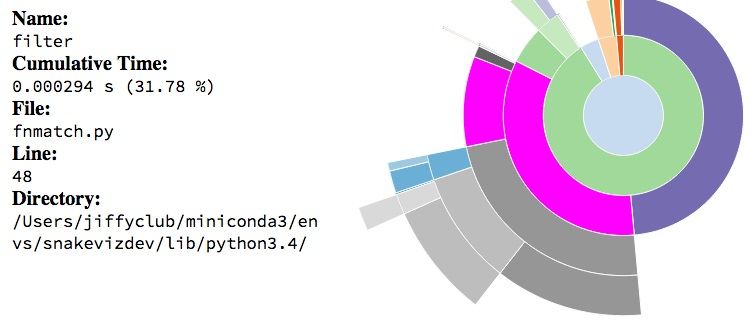
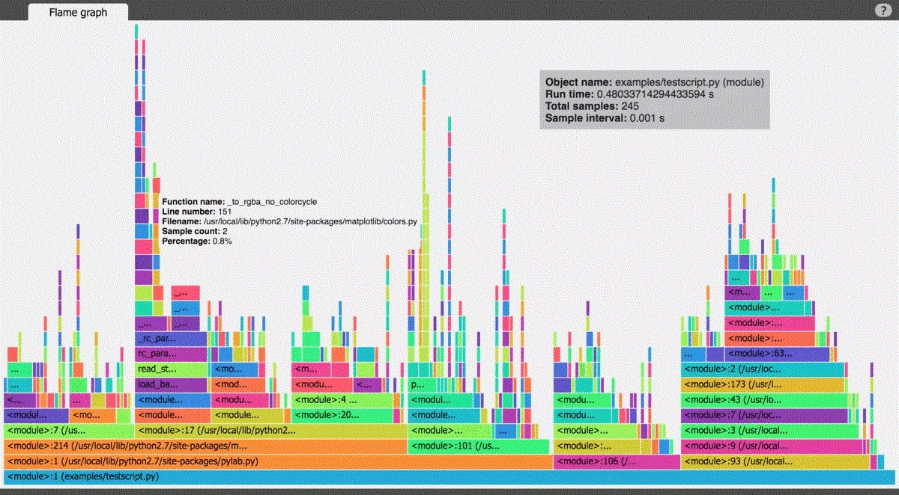

Completion profiling#
Profiling avec cProfile, memory_profiler, pyinstrument, snakeviz.
line_profiler ne semble pas plus être maintenu.
[1]:
%matplotlib inline
import matplotlib.pyplot as plt
plt.style.use("ggplot")
from jyquickhelper import add_notebook_menu
add_notebook_menu()
[1]:
Setup#
Function to profile#
[2]:
from mlstatpy.nlp.completion import CompletionTrieNode
def gain_dynamique_moyen_par_mot(queries, weights):
per = list(zip(weights, queries))
total = sum(weights) * 1.0
res = []
trie = CompletionTrieNode.build([(None, q) for _, q in per])
trie.precompute_stat()
trie.update_stat_dynamic()
wks = [(w, p, len(w) - trie.min_keystroke0(w)[0]) for p, w in per]
wks_dyn = [(w, p, len(w) - trie.min_dynamic_keystroke(w)[0]) for p, w in per]
wks_dyn2 = [(w, p, len(w) - trie.min_dynamic_keystroke2(w)[0]) for p, w in per]
gain = sum(g * p / total for w, p, g in wks)
gain_dyn = sum(g * p / total for w, p, g in wks_dyn)
gain_dyn2 = sum(g * p / total for w, p, g in wks_dyn2)
ave_length = sum(len(w) * p / total for p, w in per)
return gain, gain_dyn, gain_dyn2, ave_length
Data#
[3]:
from mlstatpy.data.wikipedia import download_titles
file_titles = download_titles(country="fr")
[4]:
len(file_titles)
[4]:
33
[5]:
from mlstatpy.data.wikipedia import enumerate_titles
list_titles = list(
sorted(set(_ for _ in enumerate_titles(file_titles) if "A" <= _[0] <= "Z"))
)
[6]:
import random
sample1000 = random.sample(list_titles, 1000)
with open("sample1000.txt", "w", encoding="utf-8") as f:
f.write("\n".join(sample1000))
Standard modules#
cProfile#
[7]:
import cProfile, io, pstats, os
def toprofile0(lines):
gain_dynamique_moyen_par_mot(lines, [1.0] * len(lines))
def doprofile(lines, filename):
pr = cProfile.Profile()
pr.enable()
toprofile0(lines)
pr.disable()
s = io.StringIO()
ps = pstats.Stats(pr, stream=s).sort_stats("cumulative")
ps.print_stats()
rem = os.path.normpath(os.path.join(os.getcwd(), "..", "..", ".."))
res = s.getvalue().replace(rem, "")
ps.dump_stats(filename)
return res
[8]:
r = doprofile(sample1000, "completion.prof")
print(r)
1311797 function calls in 1.865 seconds
Ordered by: cumulative time
ncalls tottime percall cumtime percall filename:lineno(function)
1 0.000 0.000 1.865 1.865 <ipython-input-7-d2b6d910fdd7>:3(toprofile0)
1 0.000 0.000 1.865 1.865 <ipython-input-2-684f3e860cf5>:3(gain_dynamique_moyen_par_mot)
1 0.241 0.241 1.232 1.232 \src\mlstatpy\nlp\completion.py:415(precompute_stat)
15982 0.244 0.000 0.770 0.000 \src\mlstatpy\nlp\completion.py:503(merge_completions)
1 0.088 0.088 0.366 0.366 \src\mlstatpy\nlp\completion.py:450(update_stat_dynamic)
15982 0.307 0.000 0.314 0.000 {built-in method builtins.__build_class__}
1 0.194 0.194 0.220 0.220 \src\mlstatpy\nlp\completion.py:203(build)
16982 0.094 0.000 0.165 0.000 \src\mlstatpy\nlp\completion.py:555(update_dynamic_minimum_keystroke)
36051 0.114 0.000 0.130 0.000 \src\mlstatpy\nlp\completion.py:523(<listcomp>)
37609 0.035 0.000 0.071 0.000 {built-in method builtins.all}
16982 0.051 0.000 0.058 0.000 \src\mlstatpy\nlp\completion.py:588(second_step)
314299 0.053 0.000 0.053 0.000 {built-in method builtins.len}
15983 0.006 0.000 0.049 0.000 {method 'extend' of 'collections.deque' objects}
16983 0.031 0.000 0.047 0.000 \src\mlstatpy\nlp\completion.py:97(unsorted_iter)
15982 0.039 0.000 0.046 0.000 \src\mlstatpy\nlp\completion.py:542(update_minimum_keystroke)
16982 0.041 0.000 0.044 0.000 \src\mlstatpy\nlp\completion.py:624(init_dynamic_minimum_keystroke)
1001 0.028 0.000 0.043 0.000 \src\mlstatpy\nlp\completion.py:132(leaves)
115015 0.041 0.000 0.041 0.000 \src\mlstatpy\nlp\completion.py:435(<genexpr>)
15982 0.024 0.000 0.032 0.000 {built-in method builtins.sorted}
3000 0.031 0.000 0.031 0.000 \src\mlstatpy\nlp\completion.py:257(find)
110110 0.027 0.000 0.027 0.000 {built-in method builtins.hasattr}
117519 0.023 0.000 0.023 0.000 {method 'values' of 'dict' objects}
1 0.001 0.001 0.017 0.017 <ipython-input-2-684f3e860cf5>:10(<listcomp>)
16982 0.015 0.000 0.017 0.000 \src\mlstatpy\nlp\completion.py:20(__init__)
47946 0.016 0.000 0.016 0.000 {method 'extend' of 'list' objects}
23287 0.015 0.000 0.015 0.000 {built-in method builtins.min}
1000 0.002 0.000 0.015 0.000 \src\mlstatpy\nlp\completion.py:321(min_keystroke0)
1 0.001 0.001 0.013 0.013 <ipython-input-2-684f3e860cf5>:13(<listcomp>)
50946 0.013 0.000 0.013 0.000 {method 'pop' of 'list' objects}
1 0.001 0.001 0.013 0.013 <ipython-input-2-684f3e860cf5>:11(<listcomp>)
20069 0.012 0.000 0.012 0.000 {built-in method builtins.max}
1000 0.002 0.000 0.012 0.000 \src\mlstatpy\nlp\completion.py:382(min_dynamic_keystroke2)
1000 0.002 0.000 0.012 0.000 \src\mlstatpy\nlp\completion.py:352(min_dynamic_keystroke)
56589 0.011 0.000 0.011 0.000 {method 'popleft' of 'collections.deque' objects}
52034 0.011 0.000 0.011 0.000 {method 'append' of 'list' objects}
38608 0.009 0.000 0.009 0.000 {method 'append' of 'collections.deque' objects}
16982 0.008 0.000 0.008 0.000 \src\mlstatpy\nlp\completion.py:517(<genexpr>)
16981 0.007 0.000 0.007 0.000 \src\mlstatpy\nlp\completion.py:54(_add)
15982 0.007 0.000 0.007 0.000 \src\mlstatpy\nlp\completion.py:511(<listcomp>)
15982 0.007 0.000 0.007 0.000 \src\mlstatpy\nlp\completion.py:508(Fake)
31964 0.006 0.000 0.006 0.000 {method 'items' of 'dict' objects}
5 0.001 0.000 0.002 0.000 {built-in method builtins.sum}
17982 0.002 0.000 0.002 0.000 {built-in method builtins.isinstance}
1001 0.000 0.000 0.001 0.000 <ipython-input-2-684f3e860cf5>:18(<genexpr>)
1001 0.001 0.000 0.001 0.000 <ipython-input-2-684f3e860cf5>:15(<genexpr>)
1 0.000 0.000 0.000 0.000 <ipython-input-2-684f3e860cf5>:7(<listcomp>)
1001 0.000 0.000 0.000 0.000 <ipython-input-2-684f3e860cf5>:16(<genexpr>)
1001 0.000 0.000 0.000 0.000 <ipython-input-2-684f3e860cf5>:17(<genexpr>)
1 0.000 0.000 0.000 0.000 {method 'disable' of '_lsprof.Profiler' objects}
Others informations when profiling#
memory_profiler#
See memory_profiler. Version 0.56 is bugged (see #258).
[9]:
from memory_profiler import profile, __version__
%load_ext memory_profiler
[10]:
%memit toprofile0(sample1000)
peak memory: 411.20 MiB, increment: 18.40 MiB
[11]:
from io import StringIO
st = StringIO()
@profile(stream=st)
def toprofile(lines):
gain_dynamique_moyen_par_mot(lines, [1.0] * len(lines))
toprofile(sample1000)
ERROR: Could not find file <ipython-input-11-7512ff5cdee3>
NOTE: %mprun can only be used on functions defined in physical files, and not in the IPython environment.
[12]:
%%file temp_mem_profile.py
from mlstatpy.nlp.completion import CompletionTrieNode
from memory_profiler import profile
@profile(precision=4)
def gain_dynamique_moyen_par_mot(queries, weights):
per = list(zip(weights, queries))
total = sum(weights) * 1.0
res = []
trie = CompletionTrieNode.build([(None, q) for _, q in per])
trie.precompute_stat()
trie.update_stat_dynamic()
wks = [(w, p, len(w) - trie.min_keystroke0(w)[0]) for p, w in per]
wks_dyn = [(w, p, len(w) - trie.min_dynamic_keystroke(w)[0]) for p, w in per]
wks_dyn2 = [(w, p, len(w) - trie.min_dynamic_keystroke2(w)[0]) for p, w in per]
gain = sum(g * p / total for w, p, g in wks)
gain_dyn = sum(g * p / total for w, p, g in wks_dyn)
gain_dyn2 = sum(g * p / total for w, p, g in wks_dyn2)
ave_length = sum(len(w) * p / total for p, w in per)
return gain, gain_dyn, gain_dyn2, ave_length
@profile(precision=4)
def toprofile():
with open("sample1000.txt", "r", encoding="utf-8") as f:
lines = [_.strip("\n\r ") for _ in f.readlines()]
gain_dynamique_moyen_par_mot(lines, [1.0] * len(lines))
toprofile()
Overwriting temp_mem_profile.py
[13]:
import sys
cmd = sys.executable
from pyquickhelper.loghelper import run_cmd
cmd += " -m memory_profiler temp_mem_profile.py"
out, err = run_cmd(cmd, wait=True)
print(out)
Filename: temp_mem_profile.py
Line # Mem usage Increment Line Contents
================================================
5 56.7930 MiB 56.7930 MiB @profile(precision=4)
6 def gain_dynamique_moyen_par_mot(queries, weights):
7 56.7930 MiB 0.0000 MiB per = list(zip(weights, queries))
8 56.7930 MiB 0.0000 MiB total = sum(weights) * 1.0
9 56.7930 MiB 0.0000 MiB res = []
10 63.3047 MiB 6.4492 MiB trie = CompletionTrieNode.build([(None, q) for _, q in per])
11 71.0742 MiB 7.7695 MiB trie.precompute_stat()
12 80.6211 MiB 9.5469 MiB trie.update_stat_dynamic()
13 80.7305 MiB 0.1094 MiB wks = [(w, p, len(w) - trie.min_keystroke0(w)[0]) for p, w in per]
14 80.7930 MiB 0.0469 MiB wks_dyn = [(w, p, len(w) - trie.min_dynamic_keystroke(w)[0])
15 80.7930 MiB 0.0000 MiB for p, w in per]
16 80.8398 MiB 0.0430 MiB wks_dyn2 = [(w, p, len(w) - trie.min_dynamic_keystroke2(w)[0])
17 80.8398 MiB 0.0000 MiB for p, w in per]
18 80.8398 MiB 0.0000 MiB gain = sum(g * p / total for w, p, g in wks)
19 80.8398 MiB 0.0000 MiB gain_dyn = sum(g * p / total for w, p, g in wks_dyn)
20 80.8398 MiB 0.0000 MiB gain_dyn2 = sum(g * p / total for w, p, g in wks_dyn2)
21 80.8398 MiB 0.0000 MiB ave_length = sum(len(w) * p / total for p, w in per)
22 80.8398 MiB 0.0000 MiB return gain, gain_dyn, gain_dyn2, ave_length
Filename: temp_mem_profile.py
Line # Mem usage Increment Line Contents
================================================
24 56.5820 MiB 56.5820 MiB @profile(precision=4)
25 def toprofile():
26 56.5820 MiB 0.0000 MiB with open("sample1000.txt", "r", encoding="utf-8") as f:
27 56.7930 MiB 0.0742 MiB lines = [_.strip("\n\r ") for _ in f.readlines()]
28 80.8398 MiB 24.0469 MiB gain_dynamique_moyen_par_mot(lines, [1.0] * len(lines))
Static Visualization#
pyinstrument#
See pyinstrument.
[14]:
from pyinstrument import Profiler
profiler = Profiler(use_signal=False)
profiler.start()
toprofile0(sample1000)
profiler.stop()
out = profiler.output_text(unicode=False, color=False)
print(out.replace("\\", "/"))
_ ._ __/__ _ _ _ _ _/_ Recorded: 18:17:34 Samples: 1048
/_//_/// /_/ / //_// / //_'/ // Duration: 1.802 CPU time: 1.703
/ _/ v3.0.1
Program: -f pstats completion.prof -o completion.dot
1.799 run_code IPython/core/interactiveshell.py:3288
`- 1.799 <module> <ipython-input-18-f16978ea99ef>:6
`- 1.799 toprofile0 <ipython-input-7-d2b6d910fdd7>:3
`- 1.799 gain_dynamique_moyen_par_mot <ipython-input-2-684f3e860cf5>:3
|- 1.251 precompute_stat mlstatpy/nlp/completion.py:415
| |- 0.917 merge_completions mlstatpy/nlp/completion.py:503
| | |- 0.771 [self]
| | `- 0.136 <listcomp> mlstatpy/nlp/completion.py:523
| |- 0.224 [self]
| |- 0.051 update_minimum_keystroke mlstatpy/nlp/completion.py:542
| |- 0.037 <genexpr> mlstatpy/nlp/completion.py:435
| `- 0.021 leaves mlstatpy/nlp/completion.py:132
|- 0.289 update_stat_dynamic mlstatpy/nlp/completion.py:450
| |- 0.147 update_dynamic_minimum_keystroke mlstatpy/nlp/completion.py:555
| | |- 0.100 [self]
| | `- 0.046 second_step mlstatpy/nlp/completion.py:588
| |- 0.084 [self]
| |- 0.040 init_dynamic_minimum_keystroke mlstatpy/nlp/completion.py:624
| `- 0.018 unsorted_iter mlstatpy/nlp/completion.py:97
|- 0.204 build mlstatpy/nlp/completion.py:203
| `- 0.190 [self]
|- 0.020 <listcomp> <ipython-input-2-684f3e860cf5>:10
| `- 0.019 min_keystroke0 mlstatpy/nlp/completion.py:321
`- 0.018 <listcomp> <ipython-input-2-684f3e860cf5>:13
Javascript Visualization#
SnakeViz#
[15]:
%load_ext snakeviz
L’instruction qui suit lance l’explorateur par défaut avec les données du profilage.
[16]:
# %snakeviz toprofile0(sample1000)
[17]:
from pyquickhelper.helpgen import NbImage
NbImage("images/func_info.jpg", width=400)
[17]:

vprof, py-spy#
See vprof or py-spy. The second one outputs a SVG file easy to handle.
[18]:
# from vprof import profiler
# needs to be run from a file not from a notebook
# profiler.run(toprofile0, 'cmh', args=(sample1000,), host='localhost', port=8000)
[19]:
from pyquickhelper.helpgen import NbImage
NbImage("images/vprof.jpg", width=800)
[19]:

[20]: